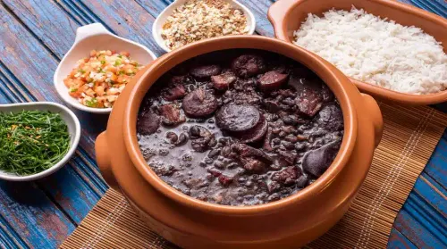

Seja Bem-vindo!
No Sabor De Casa, cada prato é preparado com carinho para trazer o verdadeiro gostinho da comida caseira. Nosso ambiente acolhedor convida você a se sentir à vontade, como se estivesse na sua própria casa. Valorizamos ingredientes frescos e receitas tradicionais que despertam memórias e emoções. Aqui, cada refeição é uma experiência simples, mas cheia de sabor e afeto. Venha viver momentos especiais ao redor de uma boa comida.
Confira nosso cardápio interativo e faça seu pedido agora mesmo.
Localização

Venha nos visitar:
Rua do saBOR De Casa - 1234, Bairro Morada Do Sol
Referencia:
Perto a igreja São Cristovão
Funcionamento
Segunda à sexta: 10:00 às 20:00
Sabado e Domingo: 08:00 às 23:00